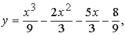
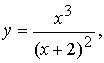
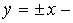
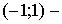
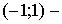
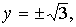
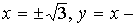
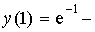

ЗАНЯТИЕ 5.11. ОБЩЕЕ ИССЛЕДОВАНИЕ ФУНКЦИИ
Контрольные вопросы
- Что называется областью определения функции?
- Что можно сказать о непрерывности элементарных функций?
- Какие функции являются четными, а какие нечетными?
- Какие функции являются периодическими?
- Что называется точкой разрыва графика функции?
- Как определить экстремумы функции?
- Как определить интервалы монотонности функции?
- Как определить точки перегиба графика функции?
- Как определить интервалы выпуклости и вогнутости графика функции?
- Как найти асимптоты графика функции?
Задачи
- Провести полное исследование функции и начертить ее график.
1)  2)
3)
4) 5)
6) 7)
8) 9)
10)
Ответы
- 1) функция определена и непрерывна на всей числовой оси,
максимум, минимум,
точка перегиба,
интервалы возрастания,
интервал убывания,
 интервал выпуклости, интервал вогнутости;
интервал выпуклости, интервал вогнутости;
2) функция определена и непрерывна на всей числовой оси, четная,
минимум,
интервал возрастания,
интервал убывания, график функции вогнутый,
 асимптоты;
3) функция определена и непрерывна на всей числовой оси, нечетная,
максимум,  минимум,
 интервал возрастания,
интервалы убывания,
минимум,
 интервал возрастания,
интервалы убывания,
точки перегиба,
интервалы выпуклости,
интервалы вогнутости,
асимптота;
4) функция определена и непрерывна на всей числовой оси, кроме
нечетная, всюду убывает,  точка перегиба,
точка перегиба,
интервалы выпуклости,
интервалы вогнутости,
асимптоты;
5) функция определена и непрерывна на всей числовой оси,
кроме  нечетная, максимум,
минимум, точка перегиба,
интервалы возрастания,
интервалы убывания,
интервалы выпуклости,
интервалы вогнутости, 
асимптоты;
6) функция определена и непрерывна на всей числовой оси, кроме 
максимум,  точка перегиба,
точка перегиба,
интервалы возрастания,
интервал убывания,
интервалы выпуклости,
интервал вогнутости, асимптоты;
7) функция определена и непрерывна на всей числовой оси,
максимум,  точка перегиба,
точка перегиба,
интервал возрастания,
интервал убывания, интервал выпуклости,
интервал вогнутости,  асимптота;
асимптота;
8) функция определена и непрерывна на всей числовой оси, четная,
абсциссы точек экстремума удовлетворяют уравнению
абсциссы точек перегиба удовлетворяют уравнению ;
9) функция определена и непрерывна на всей числовой оси,
максимум, минимум,
точка перегиба,
интервал возрастания,
интервалы убывания,
интервал выпуклости,
интервал вогнутости,
асимптота;
10) функция определена и непрерывна на всей числовой оси,
максимум,  минимум,
минимум,
абсциссы точек перегиба, интервал возрастания,
 интервалы убывания,
интервалы убывания,
интервал выпуклости,
интервалы вогнутости, асимптота.